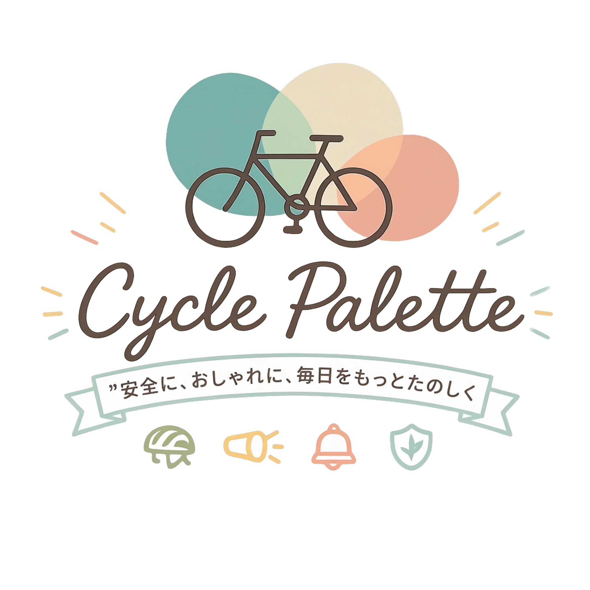

自転車保険Zutto Ride セーフティライド会
- 個人賠償 最大3億円
- 示談交渉サービス
- 年２回ロードサービス付き

安全な乗り方やヘルメット・装備の基礎知識に加え、街乗りに映えるコーディネートやおすすめアイテムなどを紹介。
「安全」「快適」「おしゃれ」の3つを軸に、毎日のサイクルライフをより豊かにする情報を発信しています。

自転車に必ず装備しなくてはいけないもの、自衛のためにつけるものを紹介


カジュアルファッション


ビジネスファッション
![オンオフ問わず活躍するナイロンストレッチジャケット]()